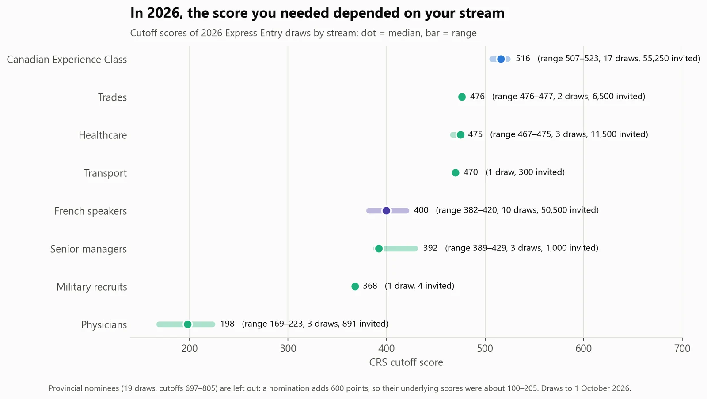
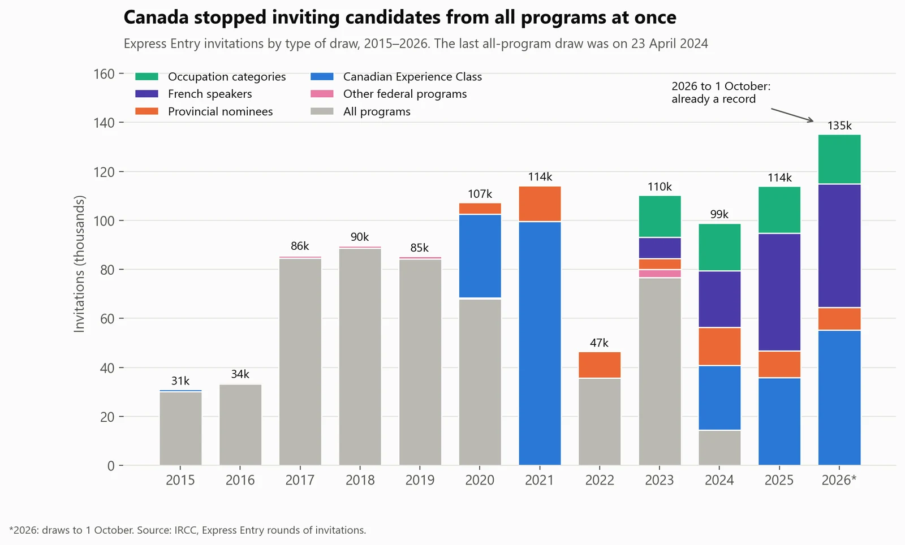
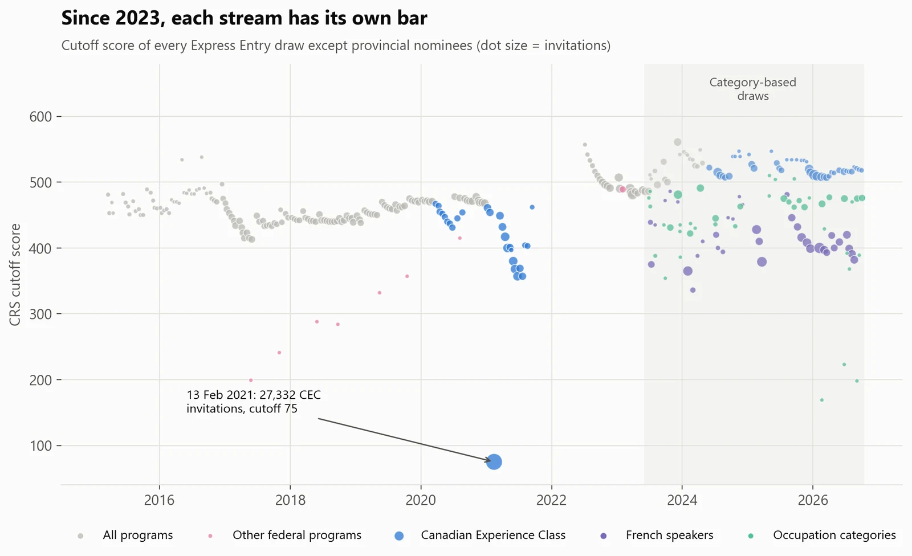
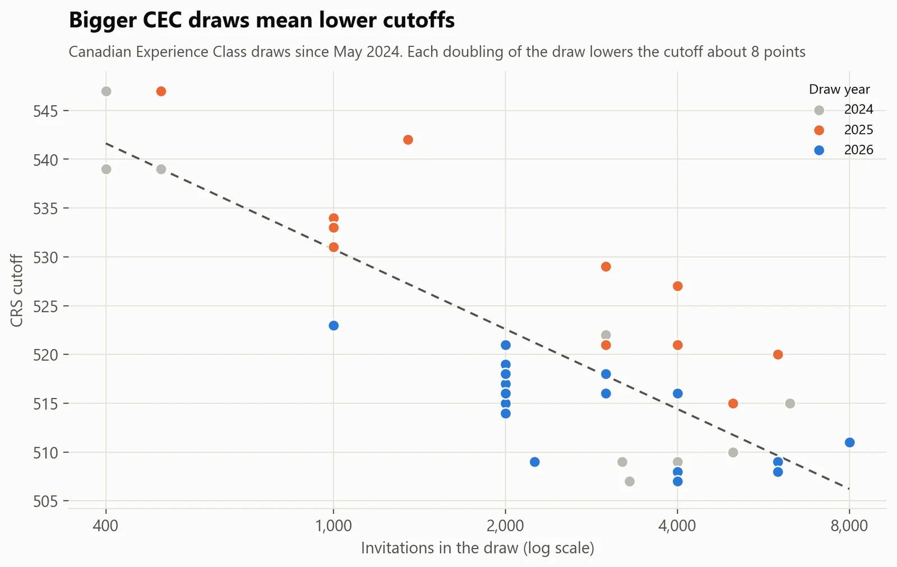
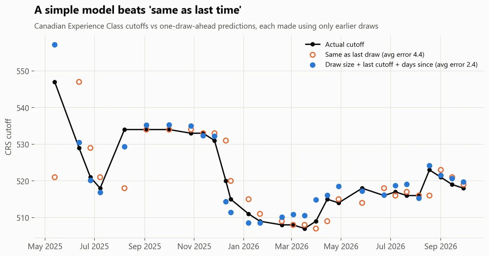

Work/PRJ-08/Immigration · Canada
Express Entry in 2026: your stream matters more than your score
It depends on your stream more than your score. Canada hasn't held an all-program Express Entry draw since April 2024. In 2026, 41% of invitations went to the Canadian Experience Class, 37% to French speakers and 15% to occupation categories, and cutoffs ranged from 169 for physicians to 523 for the CEC. Once the draw size is known, the next CEC cutoff is predictable within about 2.4 points.
- Data
- All 448 Express Entry draws, January 2015 to 1 October 2026, plus the pool's score distribution (IRCC)
- Methods
- SQL modelling, data-quality checks, regression forecasting with a rolling backtest
- Tools
- SQL (DuckDB), Python: pandas, statsmodels
- Code
- github.com/BoredMongoose/express-entry-draws ↗
What CRS score does a candidate need for Canadian PR in 2026?
Category eligibility matters more than a few extra points: 2026 category cutoffs were 40–120 points below the CEC's. And once a draw's size is announced, its cutoff can be estimated within a few points.
Average error predicting the next CEC cutoff, against 4.4 for 'same as last time' (29 draws, rolling backtest).
01Results
In 2026, the score you needed depended on your stream.





02How I did it
From raw data to a decision.
- Downloaded IRCC's full draw history (the data behind its rounds-of-invitations page) and mapped 22 draw names, which change almost every year, to 15 streams.
- Decoded the pool's 18 unlabelled distribution fields into CRS score bands and built the analysis tables in SQL.
- Wrote 11 data-quality checks. One caught an error in IRCC's own table: in draw 247 (April 2023) the 10-point score bands add up to 180 fewer candidates than their total, which looks like a transposed digit.
- Compared six forecasting approaches with a rolling backtest (each draw predicted only from earlier draws), and reported prediction intervals for the next draw.
03What could make this wrong
The limits, said out loud.
- 01The forecast needs the draw size, which IRCC announces with the draw: it answers 'what if', not 'when'.
- 0242 CEC draws is a small sample, and policy changes can move cutoffs in ways history can't predict.
- 03This is an analysis of public data, not immigration advice.
04What I learned
- 01Government data changes shape: 22 draw names for 15 streams needed a proper mapping layer.
- 02Always backtest. The model that looked best in-sample (with the pool size) was worse on draws it hadn't seen.
- 03Official data has errors too: one of IRCC's own tables contains what looks like a transposed digit.
05What I'd do next
- 01Forecast draw sizes as well, using the immigration levels plan.
- 02Publish an updating cutoff tracker after each draw.
- 03Model category draws once there are enough of them.